6: Overview of organic reactivity
Contents
6: Overview of organic reactivity#

A hot spring in Yellowstone National Park
(Credit: https://www.flickr.com/photos/pavdw)
Introduction
September 5, 1966, turned out to be a very good day for Hudson Freeze. An undergraduate microbiology major at Indiana University, he was a few weeks away from the first day of classes in his junior year, but on this September day he was far away from the oppressive heat and humidity of late summer in the midwest. Instead, he was working at the edge of Mushroom Spring in Yellowstone National Park, one of one of the many geothermal hot springs for which the park is so famous.
At the end of his sophomore year, Freeze had approached Dr. Thomas Brock, one of his microbiology professors, to ask about the possibility of working as a research assistant over the summer. Brock took him up on the offer, inviting him to come out to Yellowstone for a few weeks in late summer to help with some fieldwork.
For the past few years, Brock had been studying microbes that inhabited the hot springs: these ‘extremophile’ organisms were fascinating to him because they appeared to thrive in conditions that until quite recently had been thought to be too hot to support life. The currently accepted upper limit at which life was believed to be possible was 73 oC, but during his work in Yellowstone the previous summer Brock was convinced that he had observed microbial life – a pink colored, filamentous bacteria - in water as hot as 88 oC. Unfortunately, all of his attempts to culture these life forms in the lab had been unsuccessful. He had decided to focus his efforts this summer on Mushroom Spring, where the water was 73 oC, right at the supposed limit for life, and assigned Freeze the task of collecting microbial samples from the waters of the spring. On September 5, Freeze collected a promising-looking sample, which he took back to a makeshift lab in Brock’s cabin to prepare for transport back to Indiana.
A few weeks later, working in his professor’s lab in between classes and homework, Freeze was engaged in the challenge of figuring out how to get his microbes to grow outside their natural environment, so that he could isolated and eventually characterize them. The work was frustrating at first – attempting to get the bacterial to grow in a liquid medium, he never observed the characteristic turbidity that usually signals success. In some samples, however, he did observe the appearance of salt crystals on the bottom of the test tubes. He allowed these samples to incubate for a few more days, and noticed that more crystals had formed. Just to be thorough, he decided to look at some of the crystals under a microscope – and hit the jackpot. Clinging to the crystals themselves were the recognizable shapes of microbial cells.
In subsequent work with Thomas Brock, Freeze was able to improve his culturing techniques and characterize the new species of bacterium, which was later named Thermus aquaticus, or ‘Taq’ for short*.* He also was able to demonstrate that enzymes isolated from the bacterium remained intact and active even in boiling water.
Even though Yellowstone is a beautiful place to spend a few weeks in the summer doing field work, it turned out that making the trip to Wyoming was not really necessary – Thomas Brock later was able to isolate cultures of Taq from samples taken from the hot water system right there on the Indiana University campus, as well as from many other hot-water environments around the world. Brock and Freeze went on to publish a paper in the Journal of Bacteriology *(*1969, 98, 289) describing their newly discovered species, and donated live cultures of Taq to the American Type Culture Collection, a biological repository in Washington D.C.
Years later, a scientist named Kary Mullis working at Cetus, a biotechnology firm in the San Francisco Bay area, purchased a culture of Taq - a direct descendent of the very culture that Hudson Freeze had taken from Mushroom Spring on September 5, 1966 - from the ATCC repository. Cetus paid $35 for the sample. It turned out to be a pretty good investment.
Mullis and his colleagues at Cetus were intrigued by Freeze’s report years earlier that enzymes isolated from Taq were stable at high temperatures, unlike enzymes isolated from E. coli and other common model organisms. They cultured their Taq sample, purified the DNA-copying enzyme DNA polymerase from the Taq cells, and using the heat-stable polymerase were able to come up with a remarkably efficient method for copying short stretches of DNA. Their ‘polymerase chain reaction’, or PCR, went on to revolutionize the fields of molecular/cellular biology and biochemistry – read through the experimental section of any recent research paper in one of these fields and chances are you will see that the researchers used PCR. If you take a lab course in molecular biology, you will probably perform at least one PCR procedure. When your professor purchases the purified Taq polymerase enzyme and other reagents for your lab, part of the price will go towards paying royalty fees to the pharmaceutical giant Hoffmann-LaRoche: Kary Mullis and Cetus obtained a patent for their PCR process, and in 1992 sold patent rights to Hoffmann-LaRoche for $300 million. Mullis was awarded the 1993 Nobel Prize in Chemistry for his work on PCR.
What makes the PCR technique so powerful is that it harnesses a biological catalyst - the DNA polymerase enzyme naturally produced by the Taq microbe - to vastly increase the rate of a very specific and very useful chemical reaction, under environmental conditions (high temperature) that until then had been fatal for other enzymes. Taq polymerase, the $300 million molecule, is the most visible example (for now!) of how scientists might harness the power of biological catalysis to great advantage, but many researchers are hard at work, in Yellowstone and many other locations around the world, writing more chapters in the story that was begun by Hudson Freeze and Thomas Brock on a September day in 1966.
Up to this point, we have been focusing on the structure of organic molecules: essentially, how these molecule are put together. Now our focus shifts to the study of reactivity: what happens, in other words, when covalent bonds within a molecule break and new covalent bonds form, as molecule A is transformed into molecule B. The story of Taq and PCR is centered around a biochemical reaction - the polymerization of DNA starting with an existing DNA ‘template’. We are about to begin our exploration of chemical reactivity: how a reaction is depicted on paper, whether it absorbs or releases energy, how fast it goes, and how a catalyst might be able to make it go much faster.
In your previous college general chemistry and high school chemistry courses (and perhaps in biology courses as well), you have no doubt seen many different examples of chemical reactions. Most likely, these reactions were depicted by chemical equations, showing the starting materials (reactants) and the finished products connected by a ‘reaction arrow’. In most cases, the structures of reactants and products were not considered - they were defined only by molecular formula and perhaps by physical state (solid, liquid, gas, or solution). The reaction below, showing the decomposition of dinitrogen pentoxide (N2O5) to nitrogen dioxide and oxygen, is a typical example of the ‘equation’ treatment of chemical reactivity which you might have seen in your General Chemistry textbook.
N2O5 (s) → 2NO2 (g) + ½ O2 (g)
This way of talking about chemical reactions is perfectly adequate in introductory chemistry classes, when fundamental chemical concepts like stoichiometry, thermodynamics, and kinetics are being explained for the first time. In organic chemistry, beginning with this chapter, we will go much further. We will certainly review the important fundamental concepts of thermodynamics and kinetics that you learned previously. But in our discussion of organic reactivity, we will bring our understanding of organic structure into the picture, and think about how reactions take place: which bonds break, which bonds form, why a particular bond breaks or forms, the order in which bond-breaking and bond-forming takes place, and the nature of any intermediate species that might form during the course of the reaction. We also will think about how catalysts - enzymes in particular - are able to increase the rate of a particular reaction. Taken together, a description of a chemical reaction at this level is called a reaction mechanism. Beginning here, and continuing throughout the rest of the text, our main job will be to understand the mechanisms of the most important types of reactions undergone by organic molecules in living organisms.
Section 6.1: A first look at some reaction mechanisms#
6.1A: An acid-base (proton transfer) reaction#
We’ll begin with a relatively simple type of reaction that you are no doubt familiar with from previous chemistry classes: an acid-base reaction. Note that in chapter 7, we will come back to consider acid-base reactivity in much greater detail.
Here is the acid-base reaction between hydroxide ion and hydrochloric acid:
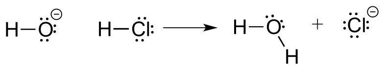
Note: A reaction such as the one above would of course include a spectator cation, such as sodium (Na+) or potassium (K+). In most of the reaction figures that we’ll see throughout this book, the spectator ion is not shown in the interest of simplicity.
A proton is transferred from HCl, the acid, to hydroxide ion, the base. The product is water (the conjugate acid of hydroxide ion) and chloride ion (the conjugate base of HCl).
Despite its simplicity (and despite the fact that the reactants and products are inorganic rather than organic), this reaction allows us to consider for the first time many of the fundamental ideas of organic chemistry that we will be exploring in various contexts throughout this text.
One very important key to understanding just about any reaction mechanism is the concept of electron density, and how it is connected to the electron movement (bond-breaking and bond-forming) that occurs in a reaction. The hydroxide ion – specifically, the oxygen atom bearing the negative formal charge – has high electron density: it is electron-rich.

fig 1
The hydrogen atom in HCl, on the other hand, has low electron density: it is electron-poor, because chlorine is more electronegative than hydrogen. As you might expect, an atom that is electron-rich is likely to be attracted to an atom that is electron-poor. As hydroxide and HCl move closer to each other, a new bond forms between oxygen and hydrogen, and the hydrogen-chlorine bond breaks. The end result is a water molecule and a chloride anion.
In organic chemistry terms, a reaction mechanism is a formalized description of how a reaction takes place - how we get, in other words, from reactants to products. Previously (section 2.3) , we saw how curved arrows were used to depict the ‘imaginary’ movement of two electrons when illustrating the conversion between two resonance contributors of the same molecule or ion (remember from that discussion that the conversion between two resonance contributors is not a reaction - it is merely an illustration of two different ways to draw the same molecule). The same curved arrow convention is used in mechanism drawings to show the electron movement that takes place in chemical reactions, where bonds are actually broken and formed. The mechanism for the HCl + OH- reaction, for example, can be depicted by drawing two curved arrows.

fig 2
Arrow (a) in the mechanistic drawing originates at one of the lone pairs on the hydroxide oxygen and points to the ‘H’ symbol in hydrochloric acid, illustrating the ‘attack’ of the oxygen lone pair and subsequent formation of a new hydrogen-oxygen bond. Arrow (b) originates at the middle of hydrogen-chlorine bond and points to the ‘Cl’ symbol, indicating that this bond is breaking: the two electrons that make the bond are ‘leaving’ and becoming a lone pair on chloride ion. Always keep in mind that these curved arrows by definition depict the movement of two electrons. (When we study radical reactions in chapter 17, we will see how to depict the movement of a single electron.)
When two (or more) curved arrows are drawn in the same figure of a mechanism, the intended meaning is that the electron movements being shown are occurring simultaneously. For example, in the figure above, the electron movement illustrated by arrow (a) (O-H bond formation) is occurring at the same time as the H-Cl bond breaking illustrated by arrow (b).
The transition state (TS) of a chemical step is a point at which bonds are in the process of breaking and/or forming. (More specifically, we will see below when discussing energy diagrams that the transition state is the point of highest energy in the chemical step). Transition states are illustrated by drawing the forming/breaking bonds as dotted lines, and are enclosed by brackets with the ‘double-dagger’ symbol. For example, the transition state in the acid-base reaction between hydroxide and HCl can be illustrated as:

fig 2a
Notice in the drawing above that both the oxygen and the chlorine bear partial negative charges at the transition state: the formal charge on oxygen changes from -1 to 0 during the course of the reaction step, while the formal charge on chlorine changes from 0 to -1.
While it can sometimes be instructive to include a transition state drawing in an organic mechanism diagram, they are not ‘obligatory’ elements of such a diagram. When asked to draw a reaction mechanism in the exercises and problems in this book, you need not include TS drawings in your answer unless specifically directed to do so.
Exercise 6.1: Draw electron movement arrows to illustrate mechanism of the acid-base reaction between acetic acid, CH3CO2H, and ammonia, NH3. Draw out the Lewis structures of reactants and products, including all lone pairs and formal charges. Include a transition state drawing in your mechanism.
Exercise 6.2: Draw electron movement arrows to illustrate the mechanism of the reverse of the reaction in Exercise 6.1: the acid-base reaction between acetate ion (CH3CO2-, acting as a base) and ammonium (NH4+), acting as an acid). Again, draw out the Lewis structures of reactants and products, including all lone pairs and formal charges.
6.1B: A one-step nucleophilic substitution reaction#
The reaction between hydroxide and HCl is a simple example of a Brønsted acid-base (proton transfer) reaction. We now continue our introduction to the essential ideas of organic reactivity with a different type of reaction in which bonds to a carbon atom are rearranged. Consider what might happen if a hydroxide ion encountered a chloromethane molecule. The hydroxide is an electron-rich species, and thus might be expected to act as a base and ‘attack’ a hydrogen as it did in the previous example with hydrochloric acid. In this case, though, the three hydrogens on chloromethane are not electron-poor, as they are bound not to chlorine but to carbon, which is not very electronegative. However, there is a relatively electron-poor atom in chloromethane: the carbon itself.

fig 3
Due to the relative electronegativity of chlorine, the carbon-chlorine bond is polar. It stands to reason that a lone pair of electrons on the electron-rich hydroxide oxygen will be attracted to the electron-poor carbon nucleus.

fig 4
In the mechanism drawing above, curved arrow (a) shows the lone pair electrons on the hydroxide oxygen moving to fill up an sp3 orbital on chloromethane, forming a new carbon-oxygen σ bond. However, in order for this new bond to form, one of the bonds already on the carbon must simultaneously break - otherwise, there will be five bonds to carbon and the octet rule will be violated (remember that the ‘octet rule’ tells us that elements in the second row of the periodic table can have a maximum of eight valence electrons). Curved arrow (b) illustrates how the two electrons in the carbon-chloride bond break out of their σ bond and become a lone pair on the chloride ion product. In other words, arrow (b) illustrates the breaking of the carbon-chlorine bond. (We will see a transition state drawing for this reaction in chapter 8, when we study this type of reaction mechanism in much greater detail).
The reaction mechanism illustrated above called a nucleophilic substitution. The ‘substitution’ term is easy to understand: just recognize how hydroxide substitutes for chlorine as the fourth bond to the central carbon. The term ‘nucleophilic’ means ‘nucleus-loving’ and refers to the electron-rich species, the hydroxide oxygen. This oxygen is a nucleophile: it is electron-rich and attracted to the electron-poor nucleus of the carbon atom, and ‘attacks’ with a lone pair to form a new covalent bond.
There are two more terms that come into play here, both of which you will see again and again as you continue to study organic reactions. Because the carbon atom in methyl chloride is electron-poor, it is attracted to anything that is electron rich - anything nucleophilic, in other words. Thus, the carbon is referred to in this context as an electrophile. The chlorine, because it leaves with two electrons to become a chloride ion, is termed a leaving group.

fig 5
Exercise 6.3: In each of the nucleophilic substitution reactions below, identify the nucleophile, electrophile, and leaving group, and fill in the missing product.

fig 6
6.1C: A two-step nucleophilic substitution mechanism#
Reaction mechanisms describe not only the electron movement that occurs in a chemical reaction, but also the order in which bond-breaking and bond-forming events occur. Some nucleophilic substitution reactions, for example, can occur by a two-step mechanism that is different from the one-step mechanism we just saw between hydroxide ion and chloromethane. Look, for example, at the substitution reaction between acetate ion and 2-chloro-2-methyl propane (common name tert-butyl chloride).
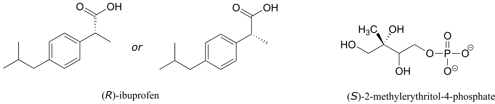
fig 7
Unlike the chloromethane plus hydroxide reaction, in which the substitution process took place in a single, concerted step, it turns out that this mechanism involves two separate steps. The leaving group, chloride anion, leaves first, before the acetate nucleophile attacks.

fig 8
Because the central carbon (colored blue in the figure above) has lost its share of the two electrons in what was the carbon-chlorine bond, it is now positively charged. Recall from section 2.1C that we can picture a carbocation as a planar, sp2-hybridized carbon center with three bonds, an empty p orbital, and a full positive charge.

fig 8a
The carbocation is highly reactive, and does not exist for very long before participating in a subsequent bond-forming event. In the language of organic mechanisms, it is referred to as a reaction intermediate.
With its empty p orbital, the carbocation intermediate is clearly electron-poor, and thus is a powerful electrophile. The negatively charged acetate ion is electron dense and a nucleophile, and as such is strongly attracted to the carbocation electrophile. Attack by the nucleophile results in a new carbon-oxygen σ bond and formation of the substitution product.
We will have much more to say about nucleophilic substitutions, nucleophiles, electrophiles, and leaving groups in chapter 8. The take home message at this point, however, is simply that two reactions that look quite similar in terms of the reactants and products can occur by different mechanisms.
You can probably appreciate by now how essential it is to understand and be able to work with curved arrows - it is something that will use constantly during the remainder of your study of organic reactivity.
For example, although you are not yet familiar with the relevant reaction mechanism (it is the HIV protease reaction, covered in chapter 11), given reactant and intermediate structures:

fig 8b
with practice you should at this point be able to recognize the bond-forming and bond-breaking electron movement that is taking place, and draw the appropriate curved arrows:

fig 8c
An additional word of caution: many beginning organic students make the mistake of using curved arrows to depict the motion of atoms. This is incorrect! The curved arrows in an organic mechanism always refer to the motion of electrons.
Section 6.2: A brief review of thermodynamics and kinetics#
You may recall from general chemistry that it is often convenient to illustrate the energetics of a chemical reaction with a reaction coordinate diagram. In a reaction coordinate diagram, the vertical axis represents the overall potential energy of the reactants, while the horizontal axis is the ‘reaction coordinate’, tracing from left to right the progress of the reaction from starting reactants R to final products P. (Many students find it helpful to envision the horizontal axis in an reaction coordinate diagram as being analogous to the progress bar at the bottom of a youtube vieo). The diagram for a typical one-step nucleophilic substitution reaction such as that between hydroxide and methyl chloride might look like this:

fig 9
Despite its apparent simplicity, this diagram conveys some very important ideas about the thermodynamics and kinetics of the reaction. Recall that when we talk about the thermodynamics of a reaction, we are concerned primarily with the difference in energy between reactants (R) and products (P): whether the reaction as a whole is uphill or downhill. When we talk about kinetics, on the other hand, we are concerned with the rate of the reaction: how fast it goes from reactants to products, regardless of whether that transformation is energetically uphill or downhill.
6.2A: Thermodynamics#
First, a quick review of some key thermodynamics terms (you may also want to go back to your General Chemistry text for a more complete review). Recall that the standard Gibbs free-energy change of a reaction (∆G˚) is the difference in energy between reactants and products at standard conditions. Gibbs free-energy change is a combination of enthalpy change (∆Ho) and entropy change (∆So):
∆G = ∆Ho - T∆So
…where T is the temperature in Kelvin (recall that the Kelvin temperature is simply the Celsius temperature plus 273.15).
Enthalpy change (∆Ho) is the heat released or absorbed by the reaction.
Entropy change (∆So) is the change in disorder from reactants to products. In a reaction in which one molecule cleaves into two smaller molecules, for example, disorder increases, so (∆So) is positive.
The equilibrium constant (Keq) for a reaction is an expression of the relative concentrations of reactants and products after the reaction has reached equilibrium. The equilibrium constant is defined as:
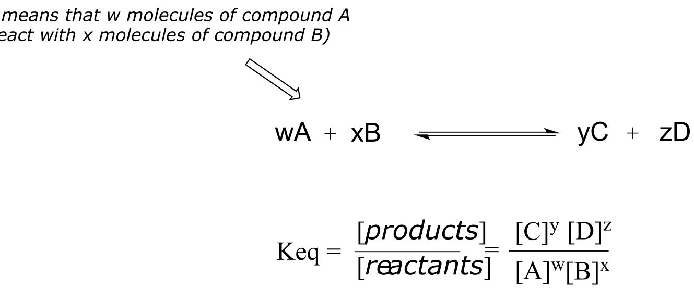
fig 9a
Now, let’s review what the above energy diagram tells us about the thermodynamics of the reaction. Note that the energy level of the products is lower than that of the reactants. This tells us that the Gibbs free-energy change for the reaction is negative, and the step is exergonic, or energy releasing. We can also say the reaction is ‘thermodynamically favorable’, or, more informally, ‘downhill’.
Recall from General Chemistry that the standard Gibbs free energy change for a reaction can be related to the reaction’s equilibrium constant (Keq) by the equation:
∆G˚ = -RT lnKeq
… where R is the gas constant (8.314 J/mol⋅K) and T is the temperature in Kelvin (K).
If you do the math, you see that a negative value for ∆G˚rnx (an exergonic reaction) corresponds to Keq being greater than 1, an equilibrium constant which favors product formation.
Conversely, an endergonic reaction is one in which the products are higher in energy than the reactants, and energy is absorbed. An endergonic reaction has a positive value of ∆G˚rnx, and a Keq between 0 and 1.
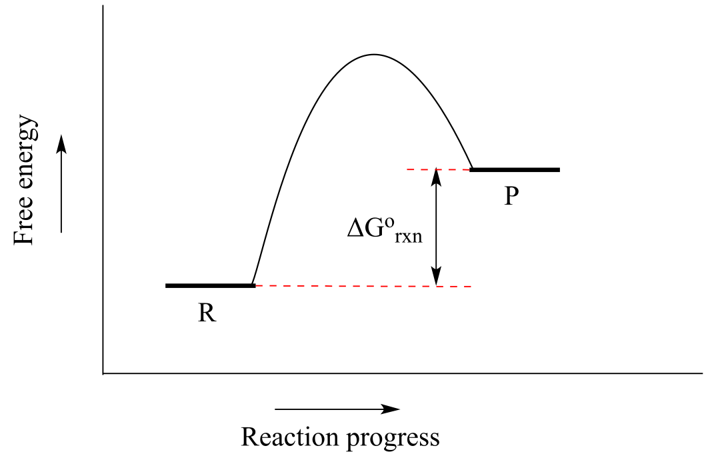
fig 9b
Acid-base reactions provide convenient examples of thermodynamically favorable and unfavorable reactions. The reaction of a strong acid like HCl with a strong base like hydroxide ion, for example, is highly favorable, and has an equilibrium constant much greater than one. The reaction of a weak acid such as acetic acid with a weak base such as water, on the other hand, is unfavorable and has an equilibrium constant that is a very small (much less than 1) positive number: we can visualize this in a reaction coordinate diagram as an ‘uphill’ reaction, in which ∆G˚rnx is positive.
When talking about exergonic, or ‘downhill’ reactions, chemists sometimes use the term ‘driving force’ to describe the chemical factor or factors that drive the reaction from higher energy reactant to lower energy product. Using the ‘downhill’ analogy again, when water flows downhill, the driving force is gravity. In an exergonic chemical reaction, the driving force generally is based on a combination of two factors: a) the stability of positive and negative charges in the product relative to those in the reactant, and b) the total bond energy in the product relative to the reactant. That may not make a lot of sense right now, but keep it in the back of your mind and we will come back to the idea of driving force when we study different reaction types in greater detail.
Now, let’s move to kinetics. Look again at the diagram for an exergonic reaction: although it is ‘downhill’ overall, it isn’t a straight downhill run.
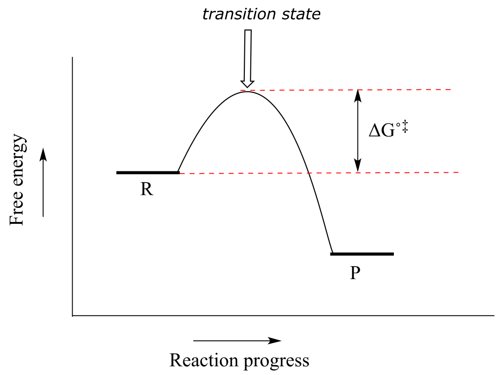
fig 9c
First, an ‘energy barrier’ must be overcome to get to the product side. The height of this energy barrier is called the standard free energy of activation (∆G˚‡). The activation energy, in combination with the temperature at which the reaction is being run, determines the rate of a reaction: the higher the activation energy, the slower the reaction. At the very top of the energy barrier, the reaction is at its transition state (TS), which you should recall is defined as the highest energy structure in the transition from reactant to product.
Consider the hypothetical reaction coordinate diagrams below.
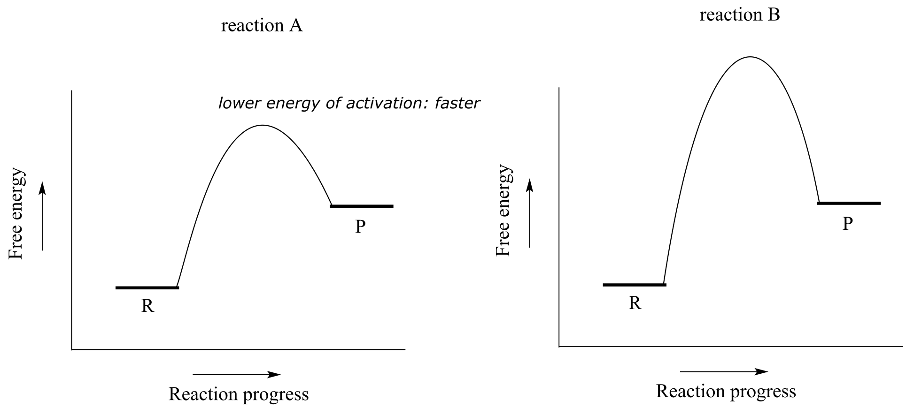Both reaction A and reaction B are slightly endergonic, or uphill: ∆G˚rxn for both is positive, meaning that Keq for both is between 0 and 1. However, the energy of activation is higher for reaction B. From this observation, we know that reaction A will proceed faster than reaction B in both forward and reverse directions (temperature and other conditions being equal), so reaction A will reach equilibrium in less time.
Exercise 6.4: Consider the hypothetical reaction coordinate diagrams below, and assume that they are on the same scale.
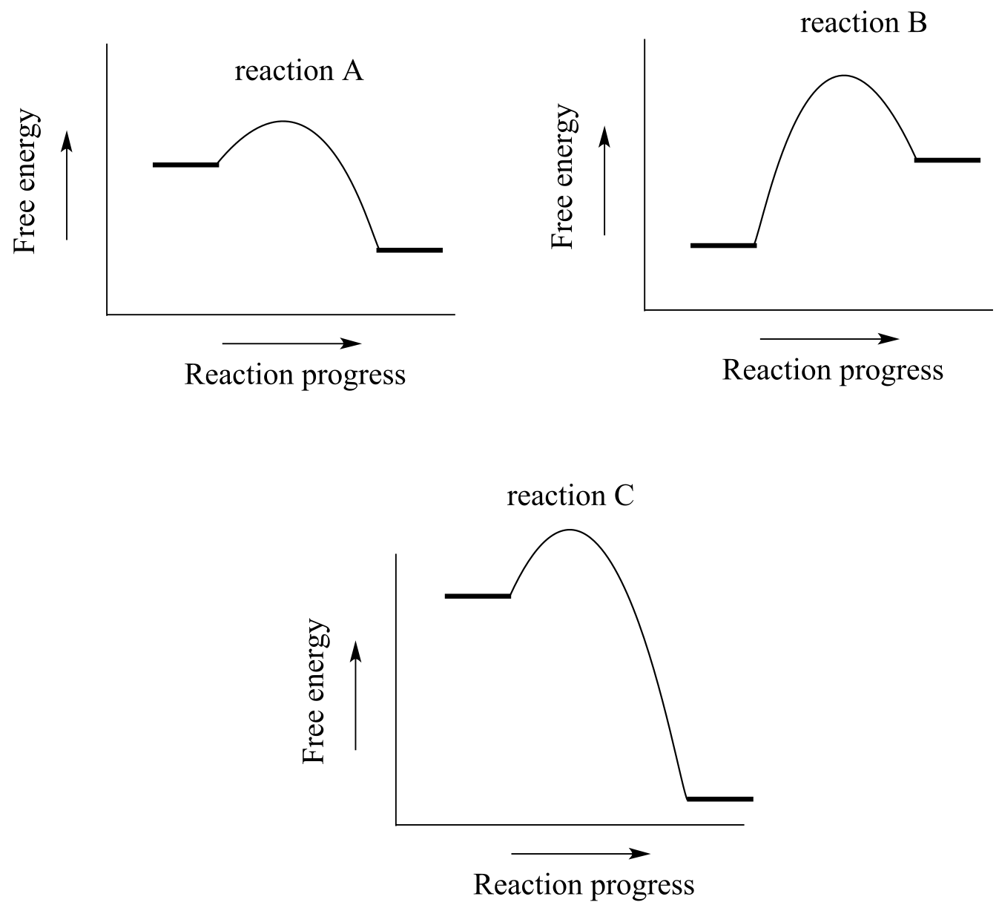fig 9d
a)Which of the diagrams describe(s) a reaction with Keq < 1 ?
b) Which of the diagrams describes the fastest reaction?
c) Which of the diagrams describes the reaction with the highest value of Keq?
d) Which of the diagrams describes the reaction with the largest ∆G˚‡ for the reverse reaction?
e) Copy the diagram for your answer to part (d), and add a label which graphically illustrates the value of ∆G˚‡ for the reaction in the reverse direction.
We turn our attention next to a two-step reaction mechanism, such as the nucleophilic substitution reaction between acetate and tert-butyl chloride. The reaction coordinate diagram for this reaction looks somewhat different from what we have seen until now:
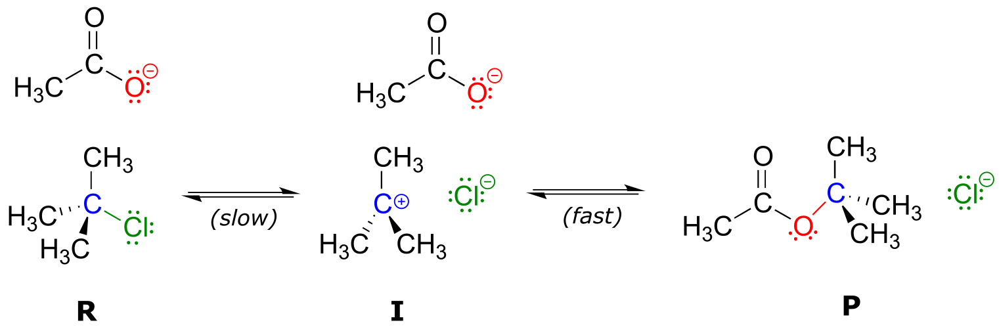
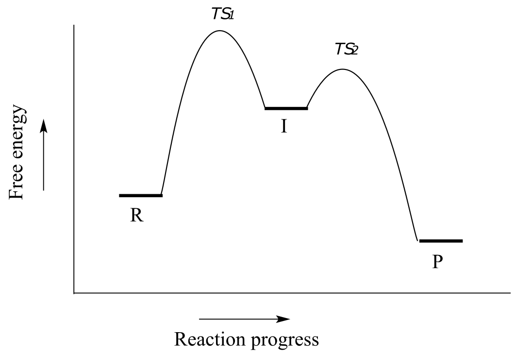
fig 10
Because there are two steps involved, there are also two transition states and two activation energies to consider, as well as a carbocation intermediate (denoted by the letter I). The first, bond-breaking step from R to I, passing over transition state TS1, can be depicted as a highly endergonic (uphill) reaction, because the carbocation-chloride ion pair is significantly higher in energy than the reactants. The second step, attack on the carbocation electrophile by the acetate nucleophile and formation of the new carbon-oxygen bond, is a highly exergonic step that passes over a second, lower energy transition state TS2. The intermediate (I) is thus depicted as an energy ‘valley’ (a local energy minimum) situated between the two energy peaks TS1 and TS2.
Notice that the activation energy for the first step is higher than the activation energy for the second, meaning that the first step is slower. This should make intuitive sense, because the first step involves bond-breaking, separation of charge, and formation of a carbocation, which is high in energy due to lacking a complete octet. Conversely, the second step involves bond-forming and neutralization of charge. In a multi-step reaction, the slowest step - the step with the highest energy of activation - is referred to as the rate-determining step (rds). The rds can be thought of as the ‘bottleneck’ of the reaction: a factor which affects the rds will affect the overall rate of the reaction. Conversely, a factor which affects a much faster step will not significantly affect the rate of the overall reaction.
Exercise 6.5: Imagine that you are trying to extinguish a burning campfire using buckets of water filled from a faucet some distance from the fire. It takes 20 seconds to fill a bucket at the faucet, and two seconds to carry the bucket to the fire and dump it on the flames. You have plenty of people to carry the buckets, but only one faucet so you can only fill one bucket at a time.
a) If you double the speed at which you carry the buckets by running instead of walking, what effect will this have on how fast you get water to the fire?
b) If, instead, you realize you can double the speed at which you fill up the buckets by using a second faucet, what effect will this have on how fast you get water to the fire?
c) What is the rate-determining step for the process?
Exercise 6.6: Use the reaction coordinate diagram below to answer the questions.

fig 10a
a) Is the overall reaction endergonic or exergonic in the forward (A to D) direction?
b) How many steps does the reaction mechanism have?
c) How many intermediates does the reaction mechanism have?
d) Redraw the diagram and add a label showing the activation energy for the rate-determining step of the forward reaction.
e) Add a label showing ∆Gorxn for the reverse reaction (D to A).
f) What is the fastest reaction step, considering both the forward and reverse directions?
**
**
Section 6.3: Catalysis#
Consider a hypothetical reaction R → P described by the diagram below.
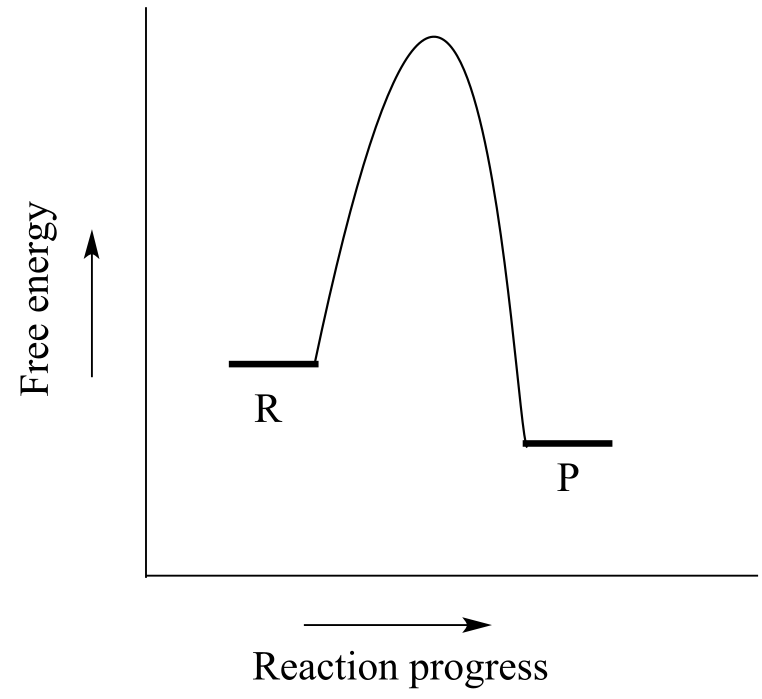
fig 10a
We notice two things about this reaction: it is exergonic, and it has a high activation energy. What this means is that although it is thermodynamically favorable, it is also slow: in other words, equilibrium favors product over reactants, but it will take a long time to reach equilibrium.
There are three ways that we could increase the rate of the reaction. First, we could add energy to the system by increasing the temperature, which gives the reacting molecules more energy to pass over the transition state. Increasing the temperature will increase the value of the rate constant k in the rate expression:
rate = k [R]
In the laboratory, many organic reactions are run at high temperatures for this very purpose. We could also increase the concentration of the reaction R, which would increase the rate of the reaction without increasing the value of k.
When talking about the biochemical reactions happening in a living cell, however, increasing the reaction temperature or reactant concentration is not a reasonable option. As an alternative, we could provide a new route from point R to point P in which the activation energy is lower. The role of a catalyst is to accelerate a reaction by stabilizing the transition state, and thus lowering the activation energy.
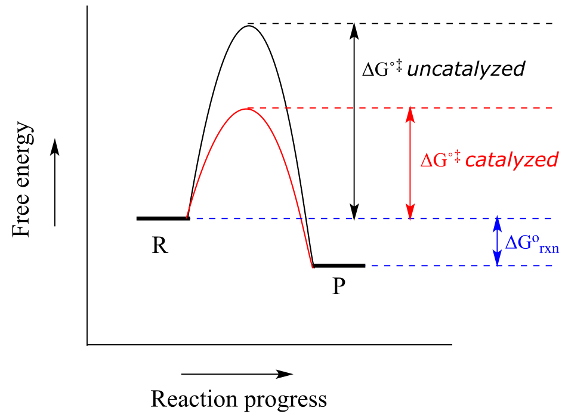
fig 10c
Catalysts, while they participate in the mechanism, are not consumed, so one catalyst molecule can catalyze multiple reaction cycles. Notice also that while the catalyst lowers the energy of the transition state (and thus the activation energy), it has no effect on ∆Grxn. A catalyst increases the rate of a reaction, but does not get consumed in the reaction and does not alter the equilibrium constant. In other words, a catalyst affects the kinetics of a reaction, but not the thermodynamics. Catalysts play a hugely important role in biochemical reactions.
Most organic reactions involve more than a single mechanistic step. Below is a reaction coordinate diagram illustrating rate acceleration of a two-step reaction by a catalyst:

Notice that the catalyst lowers the energy of the intermediate species. A concept known as the Hammond Postulate (the details of which are beyond our scope here) tells us that when a catalyst lowers the energy of an intermediate, it also lowers the energy of the adjacent transition states. Note in this diagram above that the energy barrier for the rate-determining first step is much lower in the catalyzed reaction - thus, the overall reaction is faster. When studying how an enzyme catalyzes a biochemical reaction, chemists often are actually looking at how the enzyme interacts with - and stabilizes - an intermediate species following a rate-determining step. The Hammond postulate tells us that an understanding of enzyme-intermediate interactions will also apply to enzyme-transition state interactions.
fig 10d
Acids and bases as are commonly used as catalysts in organic chemistry, and chemists have come up with a huge arsenal of catalysts, many of them metals, to speed up the rates of useful laboratory reactions. Almost all biochemical reactions are catalyzed by enzymes, which are protein catalysts. In the introduction to this chapter, we heard the story of the discovery of a heat-stable DNA polymerizing enzyme which turned out to be very useful to the scientific world.
How do enzymes accomplish their role as biochemical catalysts? Recall from section 1.3D that enzymes have an active site pocket in which substrates (reactant molecules) are bound. It is inside these active site pockets that most biochemical reactions take place. Enzymes achieve catalysis in the active site by some combination of the following:
I: By positioning two reacting molecules close to each other in the active site, in precisely the orientation necessary for them to react. Compare this to an uncatalyzed reaction in which completion depends on the two reactant molecules happening to collide, by chance, in the correct orientation.
II: By binding substrates in such a way that they assume the proper conformation necessary for a reaction to occur.
III: By increasing the reactivity of the substrates: making acidic protons more acidic, nucleophiles more nucleophilic, electrophiles more electrophilic, and leaving groups better at leaving. Very often, these feats are accomplished with acidic and/or basic amino acid side chains lining the active site pocket. As we go on to study many different types of biochemical reactions, we get a better of how this works.
IV: By stabilizing the transition states of the slower, rate-determining steps of the reaction. If a transition state has a negative charge, for example, the enzyme might provide a positively charged amino acid side chain, or a bound metal cation such as Zn+2, as a stabilizing factor. A lower-energy transition state, of course, means a lower activation energy and a faster reaction step.
Enzymes are capable of truly amazing rate acceleration. Typical enzymes will speed up a reaction by anywhere from a million to a billion times, and the most efficient enzyme currently known to scientists is believed to accelerate its reaction by a factor of about 1017 over the uncatalyzed reaction (see Chemical and Engineering News, March 13, 2000, p. 42 for an interesting discussion about this nucleotide biosynthesis enzyme called ‘orotidine monophosphate decarboxylase’).
At this point, it is not necessary for you to fully understand the four ideas listed above: just keep them in mind as we go on to study a variety of common biological organic reactions and see in greater detail how enzymes have evolved to catalyze them.
Animated tutorial on how enzymes work
Exercise 6.7: Table sugar, or sucrose, is a high-energy dietary compound, as are the fats in vegetable oil. Conversion of these compounds, along with oxygen gas (O2), to water and carbon dioxide releases a lot of energy. If they are both so high in energy (in other words, thermodyamically unstable), how can they sit for years on your kitchen shelf without reacting?
Another very important point to keep in mind about enzymes is the specificity with which they catalyze reactions. We have already discussed, in chapter 3, the idea that enzymes exert a very high level of control over the stereochemistry of a reaction: if two or more stereoisomeric products could potentially form in a reaction, an enzyme will likely only catalyze the formation of one stereoisomer, with negligible formation of other side products. Likewise, enzymes demonstrate remarkable control of regiochemistry in their reactions. The glycolysis pathway enzyme glucose-6-kinase, for example, transfers a phosphate group specifically to the hydroxyl group on carbon #6 of glucose, and not to any of the other four hydroxyl groups. We’ll look more closely at this reaction and others like it in chapter 9.

fig 11
Finding ways to maintain control over stereochemistry and regiochemistry is a constant challenge for synthetic organic chemists working with non-enzymatic reactions, and the techniques that have been developed in this arena are a big part of what you will study if you go on to take a more advanced course focusing on organic synthesis.
Finally, we will encounter many biochemical reactions in this book in which the enzyme catalyzing the reaction does so with the assistance of a coenzyme. A coenzyme is a small (relative to a protein) molecule that binds in the active site of a partner enzyme and participates in some manner with the reaction being catalyzed. Table 6 at the back of the book shows the structures of several coenzymes commonly seen in biochemical reactions.
Section 6.4: Comparing biological reactions to laboratory reactions#
The focus of this book is on organic chemistry in a biological context. At various points in our investigation of organic reactivity, however, we will also be considering some non-biological, laboratory counterparts of reactions that occur in living cells. The reason for this is two-fold: first of all, it is often instructive to compare and contrast similar reactions taking place in very different environments, and sometimes the similarities are quite striking. Secondly, even those who intend to pursue a career in the life or health sciences can benefit from some exposure to the kind of challenges that professional organic or medicinal chemists work on: if you are working as a biologist for a pharmaceutical company for example, you will be better able to appreciate the contributions of your chemist colleagues if you are able to make the intellectual connection between the reactions they are running in flasks and the those that are taking place in the cells you are studying.
Below we briefly outline the differences between laboratory and biological reactions:
Catalysts: The vast majority of biological organic reactions are catalyzed by enzymes. While chemists synthesizing molecules in the laboratory sometimes make use of enzyme-catalyzed reactions, it is much more common to use non-biological catalysts (often containing transition metals), acids or bases as catalysts, or no catalyst at all.
Solvent: Biological organic reactions occur in the aqueous environment of the cell. In the laboratory, organic reactions can be run in a wide variety of solvents, ranging from the very nonpolar (such as hexane) to the very polar, such as methanol,water, or even ionic liquids. Most commonly, though, laboratory reactions are run in relatively non-polar solvents such as diethyl ether or dichloromethane.
Reactant mixture: The aqueous environment of a cell is an extremely complex mixture of thousands of different biomolecules in solution at low concentrations (usually nanomolar to millimolar), whereas the components of a laboratory reaction have usually been purified, and are present in much higher concentrations.
Temperature: Biological reactions take place within a narrow temperature range specific to the organism: a little too cold and the enzymes catalyzing the reactions are ‘frozen’, a little too hot and the enzymes will come unfolded, or ‘denature’. Laboratory reactions can be run at a variety of temperatures, sometimes at room temperature, sometimes at the boiling point of the solvent, and sometimes at very low temperatures (such as when a reaction flask is immersed in a dry ice-acetone bath).
pH: Biological reactions take place in aqueous solution buffered to a specific pH: about pH 7 for most living things. Accordingly, highly acidic or basic species are unlikely to be reactants or intermediates in a biological reaction mechanism. Laboratory reactions are often carried out in the presence of strong acids or bases.
Key concepts for review#
You should be confident in interpreting and using the curved arrow drawing convention for showing two-electron movement. Given a set of curved arrows describing a reaction step, you should be able to draw the product indicated by the arrows. Alternatively, given the starting structure and a product for a reaction step, you should be able to draw the curved arrows showing how bonds were broken and formed. You need not understand (yet) the chemistry behind these steps, you just need to be able to use the drawing formality.
You should be able to recognize three reaction mechanism types: an acid-base reaction, a one-step nucleophilic substitution, and a two-step nucleophilic substitution.
Given an example reaction, you should be able to identify a nucleophile, electrophile, and in many cases a leaving group.
Given an example reaction mechanism, you should be able to recognize one or more reaction intermediates.
Given a reaction coordinate diagram for a hypothetical reaction, you should be able to recognize whether the reaction is endergonic or exergonic, and whether the equilibrium constant is greater than or less than 1. You should be able to identify the point(s) on the diagram corresponding to transition state(s**)** and reaction intermediate(s). In a multi-step reaction diagram, you should be able to identify the rate determining step.
Given a detailed reaction process showing starting reactant(s), intermediate(s), and product(s) with associated curved arrows, you should be able to sketch a reaction coordinate diagram that that is consistent with the details of the reaction mechanism.
You should be able to explain the role of a catalyst in a reaction.
You should be able to list the major differences between a typical biological reaction and a typical laboratory reaction.
Problems#
P6.1: For each of the nucleophilic substitution reactions below, identify the atoms which are acting as nucleophile, electrophile, and leaving group, and draw a curved-arrow diagram showing a one-step mechanism.
a)

b)

c)
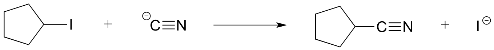
d)

P6.2: Below is a reaction coordinate diagram for a hypothetical reaction.
a) What can you say about the value of Keq for the overall A to D transformation?
b) What is the rate determining step for the overall A to D transformation?
c) Which step is faster, A to B or B to C?
d) Which transformation is more thermodynamically favorable, A to B or C to D?
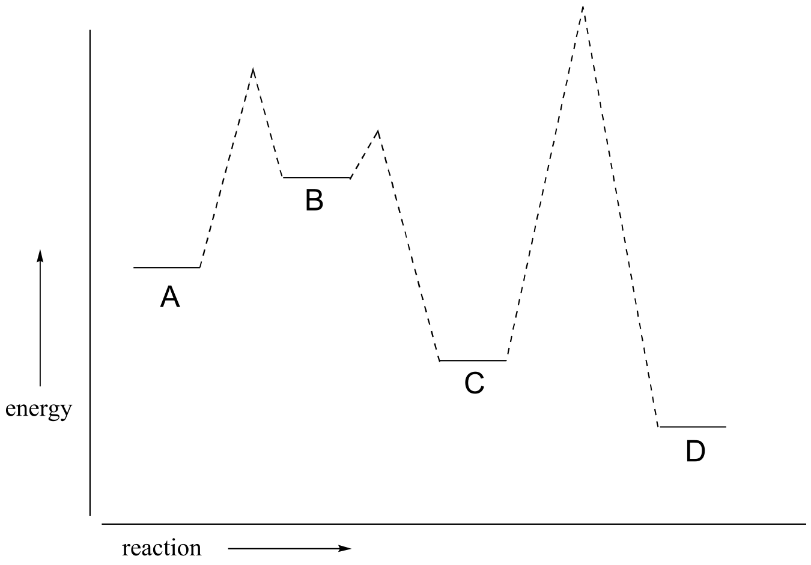
e) Below is a diagram of a hypothetical reaction. Step 2 is the rate-determining step, C is the least stable species, B is higher energy than D, and the overall reaction has an equilibrium constant Keq = 0.33. Draw a diagram that corresponds to all of this information.

P6.3: Illustrated below are individual steps in some biochemical reaction mechanisms that we will be studying later. For each step, draw the products or intermediate species that would form according to the electron-movement arrows given. Be sure to include all formal charges. You do not need to show stereochemistry.
a)

b)
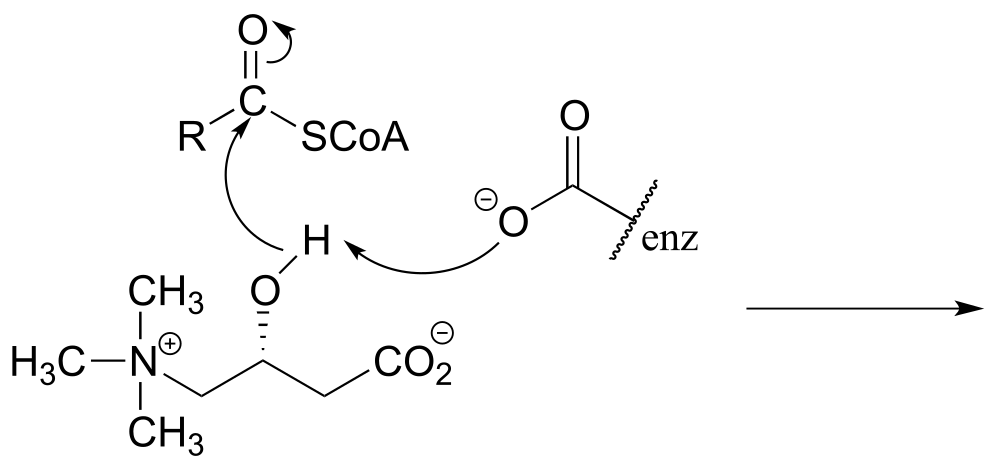
c)

d)

e)

P6.4: Shown below are individual steps in some biochemical reaction mechanisms that we will be studying later. For each, draw curved arrows showing the electron movement taking place.
a)
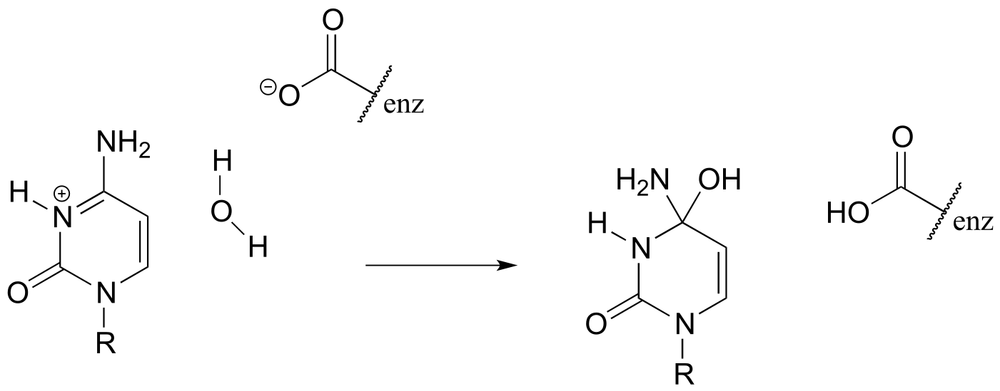
b)
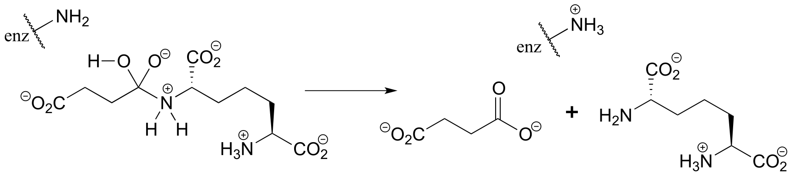c)

P6.5:
a) In the biochemical nucleophilic substitution reactions illustrated below, identify the atoms which are acting as nucleophile, electrophile, and leaving group.
Reaction 1:

Reaction 2:

b) Using appropriate ‘R’ abbreviations for regions of the molecules that are not directly involved in bond-breaking or bond-forming events above, draw curved arrows showing the electron movement that takes place in each step. Assume that both are one-step mechanisms.